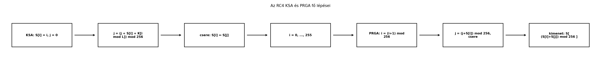

Képzeljük el, hogy egy vezeték nélküli hálózat titkosítását tervezzük a 2000-es évek elején. A hardver gyenge, a sávszélesség kicsi, és olyan folyamrejtjelre van szükség, amely bájtonként gyorsan, kis memóriával állít elő kulcsfolyamot. Az RC4 hosszú éveken át ezt a szerepet töltötte be: használta a WEP, a WPA (TKIP), a TLS, az SSH és számtalan zárt protokoll. A vonzereje az egyszerűsége volt: egyetlen 256 bájtos tömb permutációja és két mutató, semmi más. Ez az egyszerűség azonban megtévesztő. Az RC4 kimenete statisztikailag torzított, és ha a kulcs elején ismert, támadó által választott bájtok szerepelnek – ahogy a WEP teszi –, a torzítás kulcsvisszafejtésre fordítható. Ebben az alfejezetben megértjük, hogyan működik az RC4, miért kellett eldobni az első bájtjait, és miért kellett végül teljesen kivezetni a protokollokból.
Az RC4 belső állapota egy 256 lapos pakli, amely a 0, 1, …, 255 számokat tartalmazza valamilyen sorrendben. A kulcs egy keverési utasítás: a kulcsütemezés (KSA) a paklit a kulcsbájtok alapján keveri meg. A kimenetgenerálás (PRGA) ezután minden lépésben kiválaszt egy lapot, kiírja az értékét, majd tovább keveri a paklit. A kimenet tehát nem maga az állapot, hanem egy abból számított érték, ami megnehezíti a belső állapot közvetlen kiolvasását. A gyengeség abból fakad, hogy ez a keverés – különösen az első lépésekben – nem tökéletes, és a kimenő lapok értékei statisztikailag függenek a kulcstól.

Az ábra a két fázist mutatja: először a KSA 256 lépésben összekeveri
az S tömböt a kulcsbájtokkal, majd a PRGA minden egyes
kulcsfolyambájthoz növeli a mutatókat, cserél, és az
S[i] + S[j] indexről olvas ki. Ez a szerkezet a
gyakorlatban nagyon gyors, de a statisztikai torzítások miatt a kimenet
nem egyenletes véletlen.
Az RC4 egy szinkron folyamrejtjel, vagyis a küldő és a fogadó
ugyanabból a kulcsból ugyanazt a kulcsfolyamot generálja, és a nyílt
szöveggel XOR-olva kapja a rejtett szöveget. A kulcs hossza 1 és 256
bájt között lehet, tipikusan 5–16 bájt. A belső állapot három dolgot
tartalmaz: az S tömböt, amely a 0, 1, …, 255 értékek egy
permutációja, valamint az i és j mutatókat.
Minden aritmetika modulo 256.
Algoritmus (RC4 KSA – kulcsütemezés).
Bemenet: K kulcsbájtok, hossza L.
S[i] = i minden i = 0, 1, …, 255
esetén.j = 0.i = 0, 1, …, 255 esetén:j = (j + S[i] + K[i mod L]) mod 256,S[i]-t és S[j]-t.Algoritmus (RC4 PRGA – pszeudovéletlen bájtok
előállítása).
Bemenet: a KSA utáni S tömb.
i = 0, j = 0.i = (i + 1) mod 256,j = (j + S[i]) mod 256,S[i]-t és S[j]-t,t = (S[i] + S[j]) mod 256,S[t].A titkosításnál a kulcsfolyambájtokat XOR-oljuk a nyílt szöveggel:
c_i = m_i ⊕ z_i, visszafejtés pedig
m_i = c_i ⊕ z_i. A visszafejtés ugyanaz a PRGA, mert a XOR
inverze önmaga.
Megjegyzés. Az RC4 nem bizonyítottan biztonságos; nincs mögötte semmilyen egyirányú függvény vagy nehéz matematikai probléma. A biztonsága kizárólag azon a heurisztikán alapult, hogy a kimenet „elég véletlennek” tűnik. A későbbi elemzések ezt a feltevést cáfolták.
A valódi RC4 256 elemű állapota túl nagy a kézi követéshez, ezért a
szerkezetet egy N = 4 méretű oktatási változaton mutatjuk
be. Ez nem éles RC4, csak a lépések megértését
szolgálja; minden mod 256 helyett mod 4
szerepel, és az S tömb mérete 4. A kulcs legyen K = [1, 2],
azaz L = 2.
KSA lépésenként.
S = [0, 1, 2, 3],
j = 0.i = 0:
j = (0 + S[0] + K[0]) mod 4 = (0 + 0 + 1) = 1. Csere
S[0] ↔︎ S[1]: S = [1, 0, 2, 3].i = 1:
j = (1 + S[1] + K[1]) mod 4 = (1 + 0 + 2) = 3. Csere
S[1] ↔︎ S[3]: S = [1, 3, 2, 0].i = 2:
j = (3 + S[2] + K[0]) mod 4 = (3 + 2 + 1) = 6 ≡ 2 (mod 4).
Csere S[2] ↔︎ S[2]: nincs változás.i = 3:
j = (2 + S[3] + K[1]) mod 4 = (2 + 0 + 2) = 4 ≡ 0 (mod 4).
Csere S[3] ↔︎ S[0]: S = [0, 3, 2, 1].PRGA első két bájtja.
i = 0, j = 0.i = (0 + 1) mod 4 = 1;
j = (0 + S[1]) mod 4 = (0 + 3) = 3; csere
S[1] ↔︎ S[3]: S = [0, 1, 2, 3];
t = (S[1] + S[3]) mod 4 = (1 + 3) = 4 ≡ 0; kimenet
S[0] = 0.i = (1 + 1) mod 4 = 2;
j = (3 + S[2]) mod 4 = (3 + 2) = 5 ≡ 1; csere
S[2] ↔︎ S[1]: S = [0, 2, 1, 3];
t = (S[2] + S[1]) mod 4 = (1 + 2) = 3; kimenet
S[3] = 3.A mini RC4 tehát a [0, 3] kulcsfolyamot adja. A valódi
RC4 ugyanezt a logikát követi, csak 256 elemű állapottal és 256-os
modulussal.
Az RC4 első kimeneti bájtjai nem egyenletes eloszlásúak. A leghíresebb torzítás a második kimeneti bájt: annak a valószínűsége, hogy a második bájt pontosan 0, a valódi RC4 esetén
míg egy tökéletes véletlen bájtnál ez lenne. Az első bájt is enyhén torzított, és további korrelációk figyelhetők meg az első néhány száz bájtban. A gyakorlati védekezés ezért az volt, hogy az RC4 kimenetének első 256, de inkább 768 vagy 3072 bájtját el kell dobni, mielőtt a kulcsfolyamot tényleges titkosításra használnánk.
A torzítás oka a KSA és a PRGA kezdeti állapotának statisztikai szerkezete. A KSA 256 lépése nem keveri meg tökéletesen a paklit; a kulcs első bájtjai aránytalanul nagy befolyással vannak a kezdeti állapotra. A PRGA első lépései ezt a még nem teljesen véletlenszerű állapotot szivárogtatják ki. A második bájt nulla-torzítását egyszerű számlálással mérhetjük, amit a Python-illusztráció mutat be.
A WEP (Wired Equivalent Privacy) a 802.11 vezeték nélküli hálózatok első titkosítási szabványa volt. A WEP az RC4-et használta, de a kulcsot így képezte:
K = IV ‖ WEP-kulcs
ahol az IV (inicializáló vektor) egy 24 bites, nyilvánosan, minden csomagban elküldött érték, a WEP-kulcs pedig egy rögzített titkos rész (40 vagy 104 bit). A WEP-kulcs hosszú életű, ezért a támadó sok olyan kulcsot lát, amelyek csak az első 3 bájtban (a 24 bites IV-ben) térnek el, a többi bájt közös.
Az ilyen, egymással erősen korreláló kulcsokat kapcsolódó kulcsoknak nevezzük. Az RC4 KSA-ja a kulcsot ciklikusan használja, és a kulcs elején lévő ismert IV-bájtok miatt a kezdeti keverési lépések jelentős része a támadó által ismert értékekkel játszódik. Bizonyos IV-értékek esetén a KSA utáni S tömb első néhány eleme különösen erős statisztikai kapcsolatban marad a titkos kulcs valamelyik bájtjával.
Támadás (WEP-kulcs visszafejtésének fő ötlete).
A teljes Fluhrer–Mantin–Shamir-támadás (FMS) pontos matematikai levezetését itt nem tárgyaljuk, de a fenti lépések megmutatják, hogy a kapcsolódó kulcsok és a kezdeti torzítás együtt kulcsvisszafejtést tesz lehetővé.
Továbbvitt eredmény. Az RC4 kulcsütemezésének ismert, támadó által befolyásolható prefixuma (WEP IV) azt mutatja, hogy egy rejtjel kulcsütemezése sem lehet gyenge vagy lineárisan kevert; ezt a tanulságot használjuk a A DES gyengeségei, a 3DES és a meet-in-the-middle támadás alfejezetben, ahol a DES kulcsütemezését és a 3DES kulcsopcióit vizsgáljuk. Az RC4 kivezetése ugyanakkor protokollszintű lecke: a régi algoritmusok fenntartása a visszamenőleges kompatibilitás miatt visszaminősítési támadásokhoz vezet; ezt a TLS-támadások története és a „Gyűjtsd most, fejtsd vissza később” és a posztkvantum-migráció alfejezetben bontjuk ki.
A TLS 1.0–1.2 sokáig támogatta az RC4-et, mert a BEAST támadás után alternatívának tűnt a CBC üzemmóddal szemben. Azonban a kezdeti bájtok torzítása miatt az RC4 alapú TLS munkamenetekben ismert nyílt szövegű prefixumok (pl. HTTP sütik) statisztikailag visszafejthetők voltak. A támadások, mint a Bar Mitzvah és a későbbi RC4-NOMORE, azt mutatták, hogy a torzítás elegendő forgalom esetén valós, gyakorlati kulcsfolyam-információt szivárogtat.
Az IETF ezért az RFC 7465-ben (a szabványszám ellenőrzendő) megtiltotta az RC4 használatát a TLS-ben. A TLS 1.3 már egyáltalán nem tartalmaz RC4-et. A kivezetés azonban sokáig tartott, mert a régebbi kliensek és szerverek támogatása miatt a szerverek gyakran engedélyezték a visszaminősítést RC4-re, amit a támadók ki is használtak.
A WEP feltörése a 2000-es évek elején vált ismertté (a pontos évszám ellenőrzendő). A támadáshoz elegendő volt egy vezeték nélküli hálózati kártya, amely figyeli a forgalmat, és egy program, amely a fent vázolt statisztikai támadást végrehajtja. Mivel a WEP IV-je mindössze 24 bit, a IV-ek hamar ismétlődnek; forgalmas hálózaton percek alatt több tízezer csomag gyűjthető, ami elegendő a gyenge IV-k kiválasztásához. A gyakorlati eszközök (például aircrack-ng) automatizálták a támadást, és a 40 bites WEP-kulcsot gyakran percek alatt, a 104 biteset is órákon belül visszafejtették.
A tanulság kettős. Egyrészt a 24 bites IV egyszerűen túl kicsi: a kulcs újrahasználata statisztikai mintát ad. Másrészt a kapcsolódó kulcsok elleni védelem hiánya az RC4 KSA-ban katasztrofális egy olyan protokollban, amely a titkos kulcs elé rakja az IV-t. A WEP-et a WPA, majd a WPA2 váltotta, amelyek már nem RC4-et, hanem AES-CCMP-t használnak (a WPA TKIP még RC4-re épült, de más kulcsütemezéssel).
A következő kód az RC4 KSA-t és PRGA-t valósítja meg, majd megméri a
második kimeneti bájt nulla-torzítását. A kulcsgenerálás a
secrets modullal történik, nem a random
modullal.
# OKTATÁSI CÉLRA – NEM ÉLES HASZNÁLATRA
from secrets import token_bytes
def rc4_ksa(key):
S = list(range(256))
j = 0
L = len(key)
for i in range(256):
j = (j + S[i] + key[i % L]) % 256
S[i], S[j] = S[j], S[i]
return S
def rc4_prga(S, n):
i = j = 0
out = bytearray()
for _ in range(n):
i = (i + 1) % 256
j = (j + S[i]) % 256
S[i], S[j] = S[j], S[i]
t = (S[i] + S[j]) % 256
out.append(S[t])
return bytes(out)
N = 100000
zeros = 0
for _ in range(N):
key = token_bytes(16)
S = rc4_ksa(key)
keystream = rc4_prga(S, 2)
if keystream[1] == 0:
zeros += 1
print(f"második bájt nulla aránya: {zeros/N:.4f} (várt: {2/256:.4f})")Példakimenet (egy tényleges futtatás; a kulcsok véletlenek, ezért a pontos szám futásonként ingadozik, tipikusan 0,0072–0,0084 között):
második bájt nulla aránya: 0.0083 (várt: 0.0078)A mért arány közel van a elméleti értékhez, és kb. kétszerese az értéknek, ami a torzítást igazolja. A kód nem éles használatra készült: nincs konstans idejű végrehajtás, és a kezdeti kimenetet sem dobja el.
random
modullal. A kulcsot mindig secrets vagy
os.urandom forrásból származtassuk, különben a támadó
megjósolhatja a kulcsot.A válaszok a Megoldások elején találhatók.
1. feladat (A). Az N = 4 mini RC4-ben hajtsd végre a
KSA-t a K = [3, 1] kulccsal, és add meg az S tömböt a KSA
végén.
2. feladat (A). Az előző feladatban kapott S tömbből generáld a PRGA első két bájtját.
3. feladat (B). Implementálj N = 8 méretű mini RC4-et, és mérj meg 20 000 véletlen kulcs esetén a második kimeneti bájt nulla-arányát. Milyen arányt kapsz, és miért nem feltétlenül az elméleti várt érték ebben a mini változatban?
4. feladat (B). Adott egy WEP-kulcs, amelynek első három bájtja az IV, a maradék 5 bájt titkos. Magyarázd el, miért elegendő a támadónak sok IV-t és a hozzájuk tartozó kezdeti kimeneti bájtokat megfigyelnie a titkos rész bájtonkénti visszafejtéséhez.
5. feladat (C). Indokold meg, miért csökkenti, de miért nem szünteti meg a támadást a kezdeti kimenet eldobása akkor, ha a kulcsok kapcsolódóak.
6. feladat (D). Tegyük fel, hogy egy toy
WEP-protokoll 4 bájtos kulcsot használ: K = IV ‖ k, ahol
IV 1 bájt nyilvános, k 3 bájt titkos. A támadó
1000 csomagot gyűjtött KÜLÖNBÖZŐ, ismert 1 bájtos IV-kkel, és minden
csomagban ismeri a kulcsfolyam első bájtját (ismert fejléc). Vázold,
hogyan lehet k-t visszanyerni (a) kimerítő kereséssel
(
jelölt, néhány csomaggal ellenőrizve), (b) gyenge IV-k szavazásával.
Önellenőrzés – válaszok
S[i] = i, j frissítése
j = (j + S[i] + K[i mod L]) mod 256, csere, i
végig. PRGA: i és j frissítése, csere, kimenet
S[(S[i]+S[j]) mod 256].1. feladat megoldása.
N = 4, K = [3, 1], L = 2.
S = [0, 1, 2, 3], j = 0.i = 0:
j = (0 + S[0] + K[0]) mod 4 = (0 + 0 + 3) = 3; csere
S[0] ↔︎ S[3]: S = [3, 1, 2, 0].i = 1:
j = (3 + S[1] + K[1]) mod 4 = (3 + 1 + 1) = 5 ≡ 1; csere
S[1] ↔︎ S[1]: nincs változás.i = 2:
j = (1 + S[2] + K[0]) mod 4 = (1 + 2 + 3) = 6 ≡ 2; csere
S[2] ↔︎ S[2]: nincs változás.i = 3:
j = (2 + S[3] + K[1]) mod 4 = (2 + 0 + 1) = 3; csere
S[3] ↔︎ S[3]: nincs változás.Végső S: [3, 1, 2, 0].
2. feladat megoldása.
S = [3, 1, 2, 0], i = 0,
j = 0.
i = 1;
j = (0 + S[1]) mod 4 = (0 + 1) = 1; csere
S[1] ↔︎ S[1]: nincs;
t = (S[1] + S[1]) mod 4 = (1+1)=2; kimenet
S[2] = 2.i = 2;
j = (1 + S[2]) mod 4 = (1 + 2) = 3; csere
S[2] ↔︎ S[3]: S = [3, 1, 0, 2];
t = (S[2] + S[3]) mod 4 = (0 + 2) = 2; kimenet
S[2] = 0.A kulcsfolyam első két bájtja: [2, 0].
3. feladat megoldása.
A mini RC4 N = 8-cal a mod 256 helyett
mod 8-at használ, a S = list(range(8))
állapottal:
# OKTATÁSI CÉLRA – NEM ÉLES HASZNÁLATRA
import itertools
import random
def ksa(key, N):
S = list(range(N))
j = 0
for i in range(N):
j = (j + S[i] + key[i % len(key)]) % N
S[i], S[j] = S[j], S[i]
return S
def prga(S, n, N):
i = j = 0
out = []
for _ in range(n):
i = (i + 1) % N
j = (j + S[i]) % N
S[i], S[j] = S[j], S[i]
out.append(S[(S[i] + S[j]) % N])
return out
N = 8
# (a) az összes 2 elemű kulcs (0..7), determinisztikus
db = sum(prga(ksa(k, N), 2, N)[1] == 0 for k in itertools.product(range(N), repeat=2))
print(f"összes 2 elemű kulcs: {db}/{N*N} = {db/(N*N):.4f}")
# (b) 20 000 véletlen 2 elemű kulcs (statisztika, nem biztonsági célú véletlen)
rng = random.Random(7)
M = 20000
db = sum(prga(ksa([rng.randrange(N), rng.randrange(N)], N), 2, N)[1] == 0 for _ in range(M))
print(f"{M} véletlen kulcs: {db/M:.4f} (egyenletes: {1/N:.4f}, 2/N = {2/N:.4f})")Várt kimenet (futtatva):
összes 2 elemű kulcs: 17/64 = 0.2656
20000 véletlen kulcs: 0.2643 (egyenletes: 0.1250, 2/N = 0.2500)Az arány kb. (az egyenletes helyett). A „miért nem ” válasza: a Mantin–Shamir-torzítás alakú, azaz az állapotmérethez kötött, nem a 256-hoz; kis -nél és rövid kulcsnál a közelítés pontatlanabb (a 2 elemű kulcsokra pontosan ).
4. feladat megoldása.
A KSA első lépései az IV bájtjaival dolgoznak, amelyek a támadó számára
ismertek. Ha a támadó sok különböző IV-hez kapcsolódó kezdeti kimenetet
figyel meg, egy-egy IV-osztály olyan KSA-állapotot hoz létre, amelyben
az S tömb első elemei statisztikailag korrelálnak a titkos kulcs első
bájtjával. Ez a korreláció a kezdeti kimenetben is megjelenik: bizonyos
(gyenge) IV-k esetén az első kimeneti bájt értéke nagyobb
valószínűséggel (kb. 5%) egy adott függvénye a titkos bájtnak. A támadó
ezért minden titkos bájtra szavazást végez, és a legtöbb szavazatot
kapott értéket fogadja el. Az első bájt megtalálása után a folyamat
rekurzívan folytatható a következő bájtra.
5. feladat megoldása.
A kezdeti kimenet eldobása eltávolítja a leginkább torzított első
bájtokat, így a támadónak kevesebb statisztikai előnye lesz. Azonban a
kapcsolódó kulcsoknál a KSA állapota egyáltalán nem független a
kulcstól: a titkos kulcs megváltoztatása nélkül, csak az IV
változtatásával a KSA keverése eltérő, de erősen korrelált állapotokat
hoz létre. A torzítás ezért nem csak az első néhány bájtban létezik,
hanem további, kisebb korrelációk formájában mélyebben is jelen lehet.
Az eldobás nehezíti, de nem szünteti meg a támadást, mert a támadó
elegendő mintával még az alacsonyabb előnyből is visszafejtheti a
kulcsot.
6. feladat megoldása.
(a) Kimerítő keresés: a k minden
jelöltjére kiszámítjuk az RC4 első kimeneti bájtját a
K = IV ‖ k kulccsal néhány csomag (különböző IV-k) esetén;
egyezésnél további csomaggal ellenőrzünk. (A futási időt nem mértük;
Pythonban lassú, de a keresés kivitelezhető.) A tanulság: a 3 bájtos
titkos rész önmagában is kimerítően kereshető.
k első bájtját
„feloldhatóvá” teszi, ilyenkor az első kimeneti bájtból kb. 5% eséllyel
a helyes k1 jelölt adódik; sok csomagon a k1
jelöltekre szavaz, a legtöbb szavazatot kapott érték a valószínű
k1, majd a már megtalált bájttal a következő bájtra
ismétli. (Megjegyzés: rögzített IV = 0 mellett minden
csomag kulcsfolyama azonos lenne, így statisztika nem gyűjthető – ezért
kell a változó IV.)Az RC4 egy szinkron folyamrejtjel, amelynek belső állapota egy 256
elemű permutáló tömb. A KSA a kulcsbájtokkal keveri meg az S tömböt, a
PRGA pedig minden lépésben cserél és kiolvas egy bájtot. A kimenet
statisztikailag torzított: a második bájt nulla-valószínűsége
a várt
helyett. Ezért a kezdeti kimenetet el kell dobni. A WEP protokoll
IV ‖ kulcs szerkezete kapcsolódó kulcsokat hoz létre, mert
az IV ismert és változó. A támadó ezt a torzítással kombinálva
statisztikailag, bájtonként visszafejtheti a titkos kulcsot. A WEP
feltörése gyakorlatilag percek alatt lehetséges volt elegendő
forgalommal. Az RC4-et a TLS-ben az RFC 7465 tiltotta, és a modern
protokollok már nem tartalmazzák. Továbbvitt eredmény:
a kulcsütemezés gyengesége a A DES gyengeségei, a
3DES és a meet-in-the-middle támadás alfejezetben, a
protokollkivezetés nehézsége pedig a TLS-támadások
története és a „Gyűjtsd most, fejtsd vissza
később” és a posztkvantum-migráció alfejezetekben kerül elő.
A fejezet forráskiindulópontjai: Boneh–Shoup: A Graduate Course in Applied Cryptography (toc.cryptobook.us), RFC 8439 (ChaCha20-Poly1305), Menezes–van Oorschot–Vanstone: Handbook of Applied Cryptography. Az RFC 7465 pontos szabványszáma, a WEP-támadás első publikálásának évszáma és a gyakorlati feltörési idő ellenőrizendő. Az oktatási mini RC4 példa nem éles algoritmus; a Python-kód csak tanulási célra szolgál.